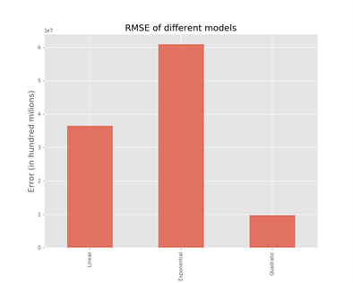

Hi! I am Aaditya Belamkonda.
Here is my personal portfolio - showcasing few of my projects dealing with
AI/ML and much more.
Peek into my work here!
Projects
Using ML to estimate Area Burned by a wildfire
In January of 2021, bush fires ravaged the land of Australia, killing an estimated 3 billion wild animals in the process.
Saline features such as temperature, humidity, wind influence spread of wildfire. As salient features
data is available and readily accessible, I utilized this data for predicting the area burned as a means to be better
equipped at dealing with wildfires.
Chess HeatMap
An analysis on carried on 4.3 million chess games to determine interesting facts about crucial squares
pieces and stratigies
Best population model analysis
Using real world population data to answer the question, "Which mathematical model minimises RMSE in modelling population?""

Other Interesting Projects
Skills
Front-end
-
React
-
JavaScript
-
HTML
-
Sass
Data Science
- TensorFlow
- Pandas
- Numpy
- Sklearn
- Scrapy & BeautifulSoup
- Matplotlib & Seaborn
A.I / ML
- TensorFlow
- Sklearn
- XGboost
- Scipy
- Numpy
- Pandas